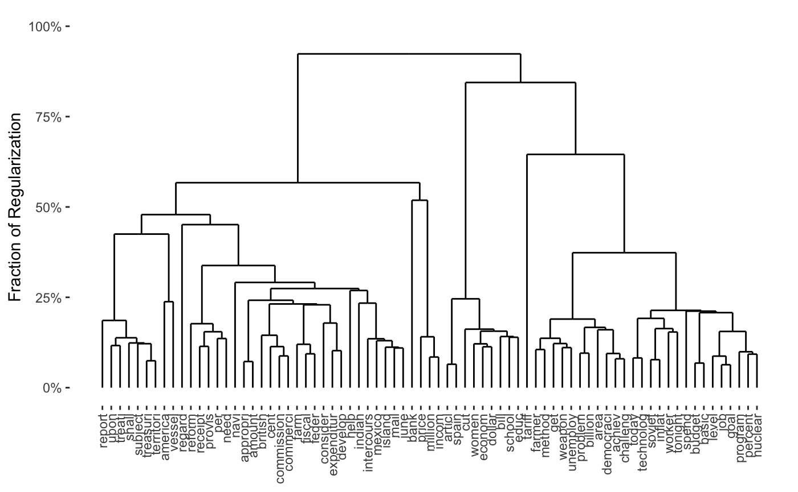

vignettes/Weights.Rmd
Weights.RmdIn this note, we describe the role of weights in convex clustering and biclustering, the default weight scheme used in CARP and CBASS, and how to add implement custom weighting schemes in clustRviz.
Recall the convex clustering problem, as discussed in Hocking et al. (2011), Chi and Lange (2015), and Tan and Witten (2015), among others:
\[ \underset{\boldsymbol{U}}{\textrm{minimize}} \;\; \frac{1}{2} \| \boldsymbol{X} - \boldsymbol{U} \|_F^2 + \lambda \sum_{l < m} w_{l,m} \| \boldsymbol{u}_l - \boldsymbol{u}_m \|_q \]
We typically take \(q = 2\), though both CARP and CBASS support \(q = 1\) as well.
It is well-known that, as \(\lambda\) increases, the solution to this problem traces out a continuous set of clustering solutions,1 ranging from each observation being its own cluster at \(\lambda = 0\) to all observations being fused into a single cluster as \(\lambda\) becomes large. Less well-studied in the literature is the effect of the weight terms \(\{w_{l, m}\}_{1 \leq l < m \leq n}\). Hocking et al. (2011) noted that a Gaussian kernel weighting scheme of the form
\[w_{l, m} \propto \exp\left(-\phi \|\boldsymbol{x}_l - \boldsymbol{x}_m\|_2^2\right)\]
performed well in experiments, giving a clustering solution that respected the density of the data. Chi and Lange (2015) confirm the usefulness of this weighting scheme, and note that, for realistic data sets, many of these weights are quite small. To improve computational efficiency, they recommend dropping many of the smallest weights, reducing the penalty (fusion) term from a sum of \(\choose{n}{2}\) terms to a much more tractable size. Since the dropped weights are typically several orders of magnitude smaller than the retained weights, omitting these terms has minimal impact on the resulting solution.
Our experience developing CARP and CBASS is similar: the Gaussian kernel weights work well in practice, and omitting smaller weights leads to significant increases in computational efficiency. For fully interactive data analysis, we find that using a relatively sparse set of weights is important, even with the speed advantages given by CARP and CBASS.
We note two properties that any sensible weighting scheme must satisfy and which are enforced internally by our software:
If the latter condition is not satisfied, the data are never fused into a single cluster, even as \(\lambda \to 0\), so our algorithms never terminate. Relatedly, if the second condition is not satisfied, the clustering problem is fully separable across groups of observations and data from different parts of the graph are “in the dark” about each other: the same solution could be obtained by clustering the two sets of observations separately, which is rarely what we want in a clustering algorithm.
Chi, Allen, and Baraniuk (2017) propose a convex formulation of biclustering:
\[ \underset{\boldsymbol{U}}{\textrm{minimize}} \;\; \frac{1}{2} \| \boldsymbol{X} - \boldsymbol{U} \|_F^2 + \lambda \left(\sum_{l < m} w_{l,m} \| \boldsymbol{U}_{l\cdot} - \boldsymbol{U}_{m\cdot} \|_q + \sum_{j < k} w_{j, k} \|\boldsymbol{U}_{\cdot j} + \boldsymbol{U}_{\cdot k}\|_q\right) \]
Here we doubly fuse our data: combining row-wise fusion (the first part of the penalty term) to cluster observations with column-wise fusion (the second part of the penalty term) to cluster features. The resulting problem induces biclustering; see Chi et al. (2017) for more details.
As Chi et al. note, an additional requirement on the weights is necessary to obtain sensible solutions:2
This behavior is automatically enforced by CBASS. That is, after the weights are calculated, they are (silently) renormalized to have an appropriate sum.
clustRviz’s Default Weighting SchemeAs noted above, “sparsified” Gaussian RBF weights provide a robust and useful trade-off between statistical and computational performance. As such, they are the default weighting scheme used for both CARP and CBASS.
When interactively visualizing clustering results, we generally want our clusters to be joined together smoothly. To achieve this goal, we select the weight parameter \(\phi\) to maximize the variance of the clustering weights. While this does not guarantee the smoothest possible clustering, we have found it to be a useful heuristic. That is, if not specified by the user, we select:
\[\hat{\phi} = \underset{\phi}{\textrm{arg max}}\;\; \text{Var}\left(\exp\left\{-\phi \|\boldsymbol{x}_i - \boldsymbol{x}_j\|_2^2\right\}\right)\]
where the variance is taken over all pairs \(i, j\).3
This is implemented in clustRviz via the dense_rbf_kernel_weights function. Note that this is a function factory - it returns a function which can be called to actually calculate the weights:
library(clustRviz)
## Registered S3 method overwritten by 'seriation':
## method from
## reorder.hclust gclusget_upper_triangle <- function(x) as.vector(x[upper.tri(x)]) weight_func <- dense_rbf_kernel_weights() weights <- weight_func(presidential_speech)$weight_mat weights[1:5, 1:5]
## Abraham Lincoln Andrew Jackson Andrew Johnson Barack Obama
## Abraham Lincoln 0.000000000 0.3701283153 0.719439416 0.0024191769
## Andrew Jackson 0.370128315 0.0000000000 0.424126484 0.0006325056
## Andrew Johnson 0.719439416 0.4241264843 0.000000000 0.0022576824
## Barack Obama 0.002419177 0.0006325056 0.002257682 0.0000000000
## Benjamin Harrison 0.271504288 0.3437737065 0.345265065 0.0015796098
## Benjamin Harrison
## Abraham Lincoln 0.27150429
## Andrew Jackson 0.34377371
## Andrew Johnson 0.34526507
## Barack Obama 0.00157961
## Benjamin Harrison 0.00000000We see here that \(\phi\) was automatically selected, yielding a variance of
var(get_upper_triangle(weights))
## [1] 0.03501288and a nice “spread” of weights:
hist(get_upper_triangle(weights), col = "grey80", border = "white", breaks = 30, xlab = "Dense RBF Kernel Weight Value", main = "Highly Variable RBF Weights")
If we had prior information about a good choice of the scale parameter \(\phi\), we could supply it to the initial call to dense_rbf_kernel_weights:
weight_func_phi_1 <- dense_rbf_kernel_weights(phi = 1) weights_phi_1 <- weight_func_phi_1(presidential_speech)$weight_mat weights_phi_1[1:5, 1:5]
## Abraham Lincoln Andrew Jackson Andrew Johnson Barack Obama
## Abraham Lincoln 0.000000e+00 6.842756e-44 5.005216e-15 2.326824e-262
## Andrew Jackson 6.842756e-44 0.000000e+00 5.617450e-38 1.277654e-320
## Andrew Johnson 5.005216e-15 5.617450e-38 0.000000e+00 2.324261e-265
## Barack Obama 2.326824e-262 1.277654e-320 2.324261e-265 0.000000e+00
## Benjamin Harrison 2.385993e-57 4.239022e-47 6.535273e-47 7.161116e-281
## Benjamin Harrison
## Abraham Lincoln 2.385993e-57
## Andrew Jackson 4.239022e-47
## Andrew Johnson 6.535273e-47
## Barack Obama 7.161116e-281
## Benjamin Harrison 0.000000e+00Not surprisingly, this gives weights with much lower variance than before.
var(get_upper_triangle(weights_phi_1))
## [1] 1.926745e-30So far, we have used (squared) Euclidean distance to define our kernel, but we can in fact use any distance function \(d\) to calculate weights as: \[\phi \propto \exp\left\{-\phi d(\boldsymbol{x}_i, \boldsymbol{x}_j)^2\right\}\]
To use alternate weight functions, \(d(\cdot, \cdot)\), pass the dist.method and p arguments to dense_rbf_kernel_weights. For example, if we wanted to use the \(\ell_4\) metric, we could use
dense_rbf_kernel_weights(dist.method = "minkowski", p = 4)
See the dist function in the stats package for supported distances.
Once we have a dense set of weights, we typically wish to sparsify them to improve computational speed. There are several ways to do so, but perhaps the simplest is to take the \(k\)-nearest neighbors graph for some \(k\). That is, we zero out most entries in the weight matrix, keeping \(w_{ij}\) only if \(i\) is a \(k\)-nearest neighbor of \(j\) or vice versa.
Sparse weights can be calculated via the sparse_rbf_kernel_weights function factory, which works like the dense_rbf_kernel_weights function but includes an extra optional parameter \(k\). By default \(k\) is chosen as small as possible, subject to the graph still being connected:
weight_func <- sparse_rbf_kernel_weights() weight_mat <- weight_func(presidential_speech)$weight_mat weight_details <- weight_func(presidential_speech)$type weight_mat[1:5, 1:5]
## Abraham Lincoln Andrew Jackson Andrew Johnson Barack Obama
## Abraham Lincoln 0.0000000 0 0.7194394 0
## Andrew Jackson 0.0000000 0 0.0000000 0
## Andrew Johnson 0.7194394 0 0.0000000 0
## Barack Obama 0.0000000 0 0.0000000 0
## Benjamin Harrison 0.0000000 0 0.0000000 0
## Benjamin Harrison
## Abraham Lincoln 0
## Andrew Jackson 0
## Andrew Johnson 0
## Barack Obama 0
## Benjamin Harrison 0We immediately see that these weights are significantly more sparse than before. In fact, we see that for this example, approximately 88% of the weights have been zeroed out:
## [1] 88hist(get_upper_triangle(weight_mat), col = "grey80", border = "white", breaks = 30, xlab = "Sparse RBF Kernel Weight Value", main = "KNN Sparsified RBF Weights")
We see here that \(k = 4\) was the smallest \(k\) that gave a fully connected graph:
weight_details$k
## [1] 4If the user supplied a smaller \(k\) (resulting in a non-connected graph), an error would be thrown:
sparse_rbf_kernel_weights(k = 3)(presidential_speech)
## Error: k = 3 does not give a fully connected graph. Convex (bi)clustering will not converge. (Called from sparse_rbf_kernel_weights)The distance metric used can be changed by passing additional arguments to the function factory as before:
sparse_rbf_kernel_weights(dist.method = "canberra")(presidential_speech)
CARP WeightsBy default, CARP uses Sparse RBF kernel weights, with data-driven \(\phi, k\) and the Euclidean distance. These can be changed by passing the result of sparse_rbf_kernel_weights to CARP. For example, if we wanted to use the Canberra distance with k = 10 neighbors, we would call CARP as:
CARP(presidential_speech, weights = sparse_rbf_kernel_weights(dist.method = "canberra", k = 10))
## CARP Fit Summary
## ====================
##
## Algorithm: CARP (t = 1.05)
## Fit Time: 0.270 secs
## Total Time: 1.039 secs
##
## Number of Observations: 44
## Number of Variables: 75
##
## Pre-processing options:
## - Columnwise centering: TRUE
## - Columnwise scaling: FALSE
##
## Weights:
## - Source: Radial Basis Function Kernel Weights
## - Distance Metric: Canberra
## - Scale parameter (phi): 0.001 [Data-Driven]
## - Sparsified: 10 Nearest Neighbors [User-Supplied]Note that the weights function is called on the pre-processed data matrix, not the raw data matrix.
CBASS WeightsCBASS requires two sets of weights, one for rows and one for columns. The interface is the same as for CARP, but we now can supply the row_weights and col_weights arguments separately. The former will be used as the weights argument to CARP; the latter will be used called on the transpose of the pre-processed data, since it is used to calculate column weights. The weights are computed independently (with possibly different choices of \(\phi\) and \(k\)) and can be controlled separately: e.g.
CBASS(presidential_speech, col_weights = sparse_rbf_kernel_weights(dist.method = "canberra", k = 4), row_weights = sparse_rbf_kernel_weights(dist.method = "maximum", phi = 2))
## CBASS Fit Summary
## ====================
##
## Algorithm: CBASS (t = 1.01)
## Fit Time: 6.031 secs
## Total Time: 10.392 secs
##
## Number of Rows: 44
## Number of Columns: 75
##
## Pre-processing options:
## - Global centering: TRUE
##
## Row Weights:
## - Source: Radial Basis Function Kernel Weights
## - Distance Metric: Maximum
## - Scale parameter (phi): 2 [User-Supplied]
## - Sparsified: 2 Nearest Neighbors [Data-Driven]
##
## Column Weights:
## - Source: Radial Basis Function Kernel Weights
## - Distance Metric: Canberra
## - Scale parameter (phi): 0.001 [Data-Driven]
## - Sparsified: 4 Nearest Neighbors [User-Supplied]As mentioned above, CBASS rescales the resulting weights to ensure proper biclustering.
Even though the Sparse Gaussian RBF scheme is generally a good default choice, users may wish to use different weighting schemes with clustRviz, particularly if additional information or domain knowledge are available. To this end, both CARP and CBASS can use custom weighting schemes. We describe the different interfaces to this functionality in CARP below, and note that CBASS has the same behavior.
The easiest way to use custom weights with clustRviz is to supply a weight matrix as the weights matrix. clustRviz will perform some basic correctness checks, but will otherwise use your weights “as is.”
For example, if we wanted to use “chain” weights to cluster the presidents in alphabetical order, we could do so as follows:
weight_mat <- matrix(0, nrow = NROW(presidential_speech), ncol = NROW(presidential_speech)) weight_mat[cbind(seq(1, NROW(presidential_speech) - 1), seq(2, NROW(presidential_speech)))] <- 1 weight_mat[cbind(seq(2, NROW(presidential_speech)), seq(1, NROW(presidential_speech) - 1))] <- 1 image(weight_mat)
carp_fit_chain_weights <- CARP(presidential_speech, weights = weight_mat) print(carp_fit_chain_weights)
## CARP Fit Summary
## ====================
##
## Algorithm: CARP (t = 1.05)
## Fit Time: 0.063 secs
## Total Time: 0.325 secs
##
## Number of Observations: 44
## Number of Variables: 75
##
## Pre-processing options:
## - Columnwise centering: TRUE
## - Columnwise scaling: FALSE
##
## Weights:
## - Source: User-Provided MatrixWe note that the resulting clustering is essentially nonsense, but does respect our weights, for the most part:
plot(carp_fit_chain_weights)
If a weight scheme is used repeatedly, it may be useful to wrap it in a function which will then be called on the pre-processed data. For example, our “chain weight” example from above could be written as:
chain_weights <- function(X){ weight_mat <- matrix(0, nrow = NROW(X), ncol = NROW(X)) weight_mat[cbind(seq(1, NROW(X) - 1), seq(2, NROW(X)))] <- 1 weight_mat[cbind(seq(2, NROW(X)), seq(1, NROW(X) - 1))] <- 1 weight_mat } CARP(presidential_speech, weights = chain_weights)
## Pre-computing weights and edge sets## Computing Convex Clustering [CARP] Path## Post-processing## CARP Fit Summary
## ====================
##
## Algorithm: CARP (t = 1.05)
## Fit Time: 0.061 secs
## Total Time: 0.675 secs
##
## Number of Observations: 44
## Number of Variables: 75
##
## Pre-processing options:
## - Columnwise centering: TRUE
## - Columnwise scaling: FALSE
##
## Weights:
## - Source: User-Provided FunctionWriting the weight scheme as a function is particularly useful for biclustering, e.g.:
cbass_chain_fit <- CBASS(presidential_speech, row_weights = chain_weights, col_weights = chain_weights)
## Pre-computing column weights and edge sets## Pre-computing row weights and edge sets## Computing Convex Bi-Clustering [CBASS] Path## Post-processing rows## Post-processing columnsplot(cbass_chain_fit, type="col.dendrogram")

Note that the print method for CARP and CBASS knows that the weights were computed based on a user-supplied function, but cannot give more information than that. It is possible to provide a more complex function which will lead to more informative output, though it is beyond the scope of this vignette.
Nagorski and Allen (2018) propose the use of a spatial weighting scheme to cluster genomic regions. It is easy to implement a version of their scheme using clustRviz support for custom weight schemes:
spacc_carp <- function(X, coordinates, ..., dist.cutoff = 20000, ## Distances from SpaCC_Methy in the SpaCCr package sigma = 2e-4){ ## This is not a robust / tested implementation ## ## It is provided for demonstration purposes only spacc_weights <- function(X){ distance_mat <- as.matrix(dist(coordinates)) exp(- sigma * distance_mat) * (distance_mat < dist.cutoff) } CARP(t(X), weights = spacc_weights, ...) }
Note that this implementation will not work as is on the SpaCC_Methy example in the SpaCCr package because the adjacency graph implied by the SpaCC scheme on the example is not fully connected (the probes were at well-separated genomic locations). A more clever implementation would take advantage of this disconnectedness to separate the problem into disjoint subproblems.
Chi, Eric C., Genevera I. Allen, and Richard G. Baraniuk. 2017. “Convex Biclustering.” Biometrics 73 (1): 10–19. https://doi.org/10.1111/biom.12540.
Chi, Eric C., and Kenneth Lange. 2015. “Splitting Methods for Convex Clustering.” Journal of Computational and Graphical Statistics 24 (4): 994–1013. https://doi.org/10.1080/10618600.2014.948181.
Hocking, Toby Dylan, Armand Joulin, Francis Bach, and Jean-Philippe Vert. 2011. “Clusterpath: An Algorithm for Clustering Using Convex Fusion Penalties.” In ICML 2011: Proceedings of the 28th International Conference on Machine Learning, edited by Lise Getoor and Tobias Scheffer, 745–52. Bellevue, Washington, USA: ACM. http://www.icml-2011.org/papers/419_icmlpaper.pdf.
Nagorski, John, and Genevera I. Allen. 2018. “Genomic Region Detection via Spatial Convex Clustering.” PLoS One 13 (9): e0203007. https://doi.org/10.1371/journal.pone.0203007.
Tan, Kean Ming, and Daniela Witten. 2015. “Statistical Properties of Convex Clustering.” Electronic Journal of Statistics 9 (2): 2324–47. https://doi.org/10.1214/15-EJS1074.
The so-called “cluster-path” in the terminology of Hocking et al. (2011).↩︎
Note that Chi et al. require the column weights to sum to \(n^{-1/2}\) and the row weights to sum to \(p^{-1/2}\), because their data matrix \(X \in \mathbb{R}^{p \times n}\) is the transpose of ours.↩︎
The above maximization is not explicitly performed, but the maximum over a relatively corse gride is used.↩︎